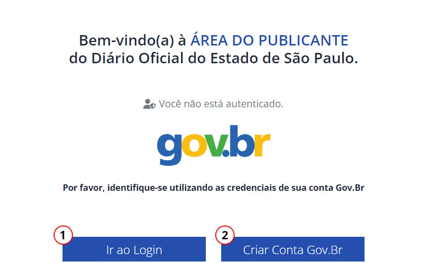
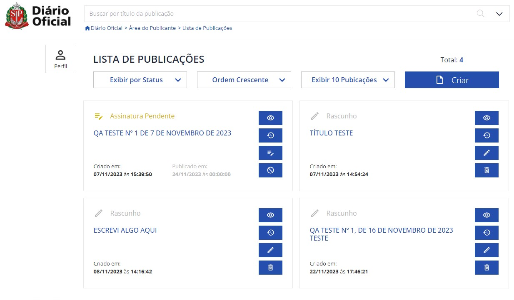
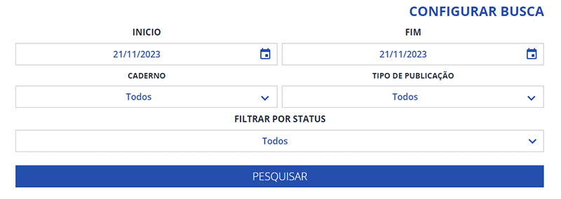
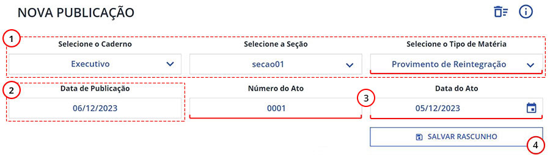
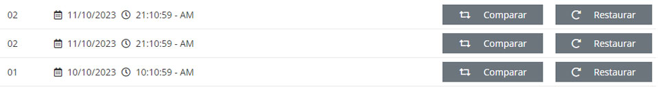
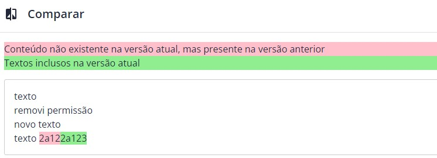
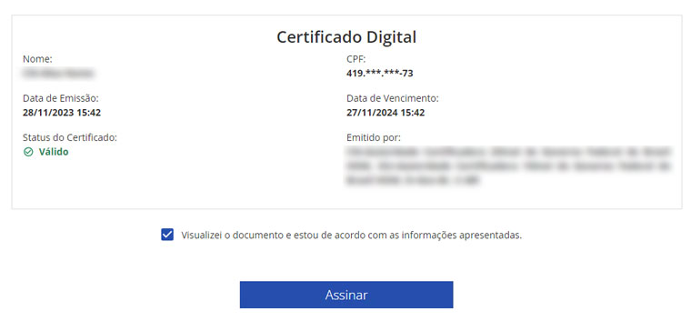

Tudo que você precisa saber sobre o Processo de criação e manutenção das publicações no Diário Oficial
Aqui veremos o que será necessário para poder acessar seu perfil na área do publicante.
Na Tela inicial do Portal DOE.SP.GOV.BR, clique em "Publicar no Diário". Você será redirecionado à tela de autenticação da Área do Publicante, ilustrada abaixo:
Caso possua uma conta GOV.BR, basta clicar em "Ir ao Login" para acessar à Área do Publicante.
Ao selecionar o botão de "Criar Conta GOV.BR", você será redirecionado à tela de Cadastro do GOV.BR
Para quem for Criar uma conta GOV.BR, clique em "Iniciar"
Em seguida clique em "Concordo", referente aos Termos de Uso e Privacidade. Autorize a utilização dos seus dados pessoais e siga com as instruções de preenchimento.
Depois de ter criado sua conta, sempre que você for logar no Portal GOV.BR, entre com seu CPF e Senha:
Entre com o seu CPF...
E digite sua senha...
E como resultado de um acesso bem sucedido, você estará logado na plataforma e situado na tela de "Listagem de Publicações". Aqui, será possível localizar e criar uma publicação, além de poder acompanhar o seu andamento.
Ao selecionar o botão "Perfil", localizado no canto superior esquedo da página. você poderá ver o nome do atual usuário Logoado, assim com seu Nível de confiabilidade.
Dependendo do nível de confiabilidade atribuido ao seu perfil, este lhe dará maior abrangência na utilização da plataforma de publicação. São eles:
Usuário com nível de confiabilidade Bronze poderão somente criar editar publicações.
Para poder publicar na nova Área do Publicante, o nível de confiabilidade mínimo deverá ser Prata, além de poder assinar digitalmente suas publicações.
Para sair do portal de Publicação do DOE, basta clicar em "Sair"
Abaixo, serão detalhadas as funções da barra de busca, situada ao topo de todas as telas da Área do Publicante.

Escreva o título de uma publicação que deseja localizar. No caso, o resultado da pesquisa somente trará as publicações dos usuários que estão associados à mesma conta de cliente.
Por exemplo, um usuário poderá fazer parte de uma entidade onde todos os demais associados poderão ver suas publicações.
Ao configurar a busca, os seguintes filtros estarão disponíveis:
Este recurso permite ver o nome da página atual assim como exibir os atalhos das páginas anteriores.
A listagem de publicações é o local onde será possível consultar todo o trabalho realizado pelos usuários associados a um mesmo cliente ativo na plataforma.
É possível reorganizar todas as publicações, de forma a facilitar a encontrar o resultado desejado com maior rapidez. É possível ordenar por Status, por data Crescente ou Decrescente. E por fim, será possível definir quantos resultados serão exibidos por página.
A lista apresenta os resultados em forma de cards (cartões), contendo informações gerais de uma publicação específica.
Botão de exibição da publicação. Serve para acessar seu conteúdo visando unicamente sua leitura. Icone disponível em todas as etapas da publicação.
Botão para editar do conteúdo e marcações de uma publicação, somente é exibido quando ela está em modo Rascunho ou não está sendo editada por outro usuário.
Botão de exclusão de uma publicação. Exibido somente quando o card estiver em modo Rascunho.
Botão de assinatura é exibido exclusivamente quando a publicação está com status “Assinatura Pendente”, isto é, o publicante finalizou a edição do texto e no momento, foi para este passo. Quando acionado a partir da lista, redireciona o usuário diretamente a página de prévia e assinatura da publicação.
Para publicações pendentes de assinatura, o usuário também poderá filtrar a lista de publicações e executar a ação de assinar através deste botão.
Botão de cancelamento da publicação, será exibido somente quando a publicação está para ser assinada (Assinatura Pendente) ou ainda não foi disponibilizada para consulta na área do cidadão (Publicação Pendente). Ao acionar este botão, o usuário deverá selecionar um motivo para o cancelamento, seguido da confirmação.
Botão de auditoria de uma publicação, será disponível em todas as etapas da publicação. Exibe a trilha de auditoria contendo todas as alterações realizadas em uma publicação ao longo do tempo, desde sua criação, até sua finalização ou cancelamento.
| Rascunho | ||||||
| Edição em Aberto | ||||||
| Assinatura Pendente | ||||||
| Publicação Pendente | ||||||
| Publicada | ||||||
| Cancelada |
Botão de acesso a tela de criação de uma nova publicação.
O objetivo desta seção é descrever as funções disponíveis para criar ou editar uma publicação.
O primeiro passo para criar sua publicação, é definir seus marcadores, isto é, informações que ajudarão a identificar o conteúdo que será dada a publicidade.
Determina a data de disponibilização do conteúdo transmitido. Esta data é calculada automaticamente pela plataforma, de acordo com o calendário configurado, considerando feriados, pontos facultativos e finais de semana.
Todas as mudanças realizadas na publicação, deverão ser salvas para evitar perda do conteúdo digitado.
Caso você saia da tela sem clicar no botão " Voltar" ou fechar a janela do navegador, além de perder o que foi alterado neste momento, a edição da publicação ficará em aberto. Você não poderá criar ou editar outra publicação sem antes salvar a edição desta publicação em aberto.
Define o título de sua publicação. Geralmente, é composto pelo nome do tipo de matéria/documento, o número do ato e a data do ato a ser transmitido.
O título poderá ter até 60 caracteres. A definição de um título é importante para conferir relevância à publicação em sites de busca, como Google, Bing, etc.
Caso sejam preenchidos os campos número e/ou data do ato, será sugerido um título para o usuário, que ainda assim, poderá ser editado conforme a necessidade da clareza da publicação.

O editor WYSIWYG, que significa "What You See Is What You Get" (O que você vê é o que você obtém), permite que o conteúdo da publicação seja editado de tal forma que seja próximo da aparência que será publicado.
Contém uma série de funções para edição e manipulação de texto, também sendo possível inserir outros elementos, como imagens, tabelas, listas.
É possível aplicar uma estilização mínima no texto, como negrito, sublinhado, itálico, mas não é possível mudar a fonte, cor da fonte, entre outros elementos, pois o Diário Oficial possui um padrão pré-definido de visualização e leitura. (sugestão, criamos um tópico de funções e botões disponíveis)
Também é possível colar planilhas do Excel, textos do Word ou bloco de notas e mesmo textos de arquivos PDF.
É recomendado que o conteúdo da publicação em si, seja redigido através do editor.
Junto com o título, a relevância do conteúdo é que o irá maximizar a relevância e transparência do que será publicado.
Apaga todos os campos preenchidos, deixando o formulário limpo para recomeçar.
Exibe um relatório de todo texto inserido, assim como a quantidade e tabelas e imagens adicionadas na publicação.
Permite o usuário escolher e restaurar versões mais antigas da publicação realizadas no modo rascunho.
A cada vez que um rascunho ou alteração for salva, será mantida uma revisão de sua publicação. Ao acessar esse botão de contexto, será exibida uma lista de revisões geradas ao longo do tempo, contendo a data, a hora, e as ações de comparar e restaurar
Anexos representam documentos complementares para a publicação.
Com a devida permissão, será possível anexar um ou mais documentos em formato PDF, que serão agregados à publicação individual no ato da transmissão.
Após parametrizar e redigir o título e conteúdo através do editor, estará tudo pronto para o envio de sua publicação.
Para ir ao próximo passo, no rodapé do formulário, será necessário executar a ação de assinar, clicando no botão ilustrado a seguir:
Sua publicação será enviada para assinatura e terá seu status alterado para “Assinatura Pendente”, redirecionando para a próxima tela.
Quando outro usuário compartilha das mesmas permissões de acesso que você possui, este poderá ver e editar publicações de sua autoria, porém o sistema não permite que mais de uma pessoa edite a mesma publicação simultaneamente.
Você só conseguirá acessar a edição de um publicação bloqueada, assim que o outro usuário responsável pela alteração atual, salvar e sair do modo de edição.
Ao acessar este card de publicação, abrirá uma janela informando quem está atuando nesta publicação no momento.
Aguarde ou peça para que o outro usuário responsável termine sua tarefa de edição.

Clique no botão Libertar para edição para finalizar a edição desta publicação que ficou em aberto.
Você não poderá criar ou editar outra publicação sem antes finalizar a edição da publicação que ficou em aberto.
Caso tenha salvo uma alteração indevida, é como voltar para a versão anterior?

Aqui você pode conferir versões antigas de sua publicação em comparação com a versão atual. Ao selecionar "Comparar", é possível averiguar a diferença entre as duas versões:

Para realizar uma avaliação mais detalhada das alterações, clique em "Comparar Conteúdo":
Assim será possível realizar uma verificação simultânea do conteúdo das duas versões.
Uma vez que tudo foi conferido, caso haja à necessidade de voltar a versão antiga e sobrepor à versão atual, basta escolher a opção "Restaurar" ou "Aplicar"
Por questão de segurança, a auditoria serve para que os responsáveis por seus colaboradores possam monitorar suas ações, caso ocorra algum incidente com o conteúdo da publicação.
Podendo assim constatar:

Esta lista de alterações pode ser extensa, por isso a tela de auditoria possui um controle na parte superior da janela que ajuda na exibição das alterações, determinando um intervalo de tempo, além de ordena-las por data crescente ou decrescente.
Para o envio de uma publicação, é necessário que sua transmissão seja assinada digitalmente.
A assinatura digital garante a autenticidade das informações enviadas num dado período de tempo, conferindo valor legal para a publicação.
Para assinar uma publicação, o usuário deverá antes finalizar seu trabalho no editor de publicações e clicar no botão de Assinar, abaixo do editor.
A publicação terá seu status alterados para “Assinatura Pendente” e o usuário será redirecionado para a tela de assinatura.
Observação: Usuário com nível de confiabilidade Nível Bronze, poderá editar e enviar a publicação para assinatura, e ao ficar com status de " Assinatura Pendente ", caso tente prosseguir, a ferramenta o impede, avisando que o usuário não possui permissão para assinar a publicação.
Insira o código enviado por SMS para seguir com a Assinatura.
Conforme ilustrado, será exibida uma prévia da publicação (painel superior) após ser disponibilizada na área do cidadão, e os dados do certificado digital emitidos pelo ITI.
Não será mais necessária a utilização de certificado digital físico com token (A3) ou exportado na máquina (A1), pois o certificado estará atrelado à conta GOV.BR
No painel inferior, são exibidos os dados do usuário que irá assinar o conteúdo transmitido. Vale notar que o documento privado será parcialmente omitido por razões de segurança e privacidade.
Para prosseguir, será necessário dar o aceite das informações apresentadas, para de fato assinar e transmitir a publicação.
É possível que reverta o passo da assinatura, caso novas informações precisem ser adicionadas, “Voltar para o Rascunho”. Neste caso, a publicação muda de estado para “Rascunho” e ela poderá ser atualizada através do editor.
Caso o usuário precise assinar posteriormente sua publicação, ele poderá retornar para a listagem
Ao clicar no botão de Assinar, é aplicada a assinatura. No caso da operação ser bem sucedida, o usuário é redirecionado para a tela de confirmação do envio de sua publicação.
O usuário podera visualizar o resultado do envio e retornar para a listagem de publicações.
Será Exibido os seguintes dados:
O processo de criação da publicação foi finalizado, mas ficará com a " Publicação Pendente", aguadando a chegada da sua data de publicação.